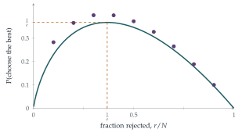

On the basis of an interview, the \(N\) candidates for admission to a college are ranked in order according to their mathematical potential. The candidates are interviewed in random order (that is, each possible order is equally likely).
Find the probability that the best amongst the first \(n\) candidates interviewed is the best overall.
Find the probability that the best amongst the first \(n\) candidates interviewed is the best or second best overall.
Verify your answers for the case \(N = 4\), \(n = 2\) by listing the possibilities.
The hook
You are interviewing candidates one at a time, and must decide on the spot: accept this one, and stop, or reject them for ever and see the next. You want the very best. If you accept too early you probably miss someone better; if you wait too long the best has probably gone. What should you do?
The answer, one of the most celebrated results in probability, is: reject the first \(37\%\) of candidates, then accept the first one who is better than all of those. This succeeds about \(37\%\) of the time, and \(37\%\) is \(\frac1e\). This question computes the basic probabilities, and its companion from STEP II 2006 (in the exercises) analyses the simplest version of the strategy, rejecting just the first candidate.
Before you start
In a random order, what is the probability that the overall best candidate is among the first \(n\) interviewed?
The best candidate is equally likely to be in any of the \(N\) positions, so the probability is \(\frac nN\).
Working it through
Stage 1 The best of the first \(n\) is the best
The best among the first \(n\) is the best overall exactly when the overall best is among the first \(n\): probability \(\frac nN\).■
Stage 2 Best or second best
The best of the first \(n\) is the second best overall exactly when the second best is among the first \(n\) but the best is not. What is that probability?
The second best is among the first \(n\) with probability \(\frac nN\); given that, the best is in one of the other \(N - 1\) positions, of which \(N - n\) are after the first \(n\). So \[\mathrm{P}(\text{best or second best}) = \frac nN + \frac nN\cdot\frac{N - n}{N - 1}. \qed\] For \(N = 4\), \(n = 2\): \(\frac12 + \frac12\cdot\frac23 = \frac56\). Listing the positions of the top two candidates among the four places (all \(12\) ordered placements equally likely), the best of the first two is one of the top two in all but the \(2\) placements where both top candidates come in positions \(3\) and \(4\): \(\frac{10}{12} = \frac56\).
Stage 3 The optimal strategy
Strategy: reject the first \(r\) candidates, then accept the first candidate better than all of them. If the best candidate is in position \(k > r\), when does the strategy pick them?
The strategy picks the best candidate, in position \(k\), if and only if no candidate in positions \(r + 1, \ldots, k - 1\) beats all of the first \(r\), that is, if the best of the first \(k - 1\) candidates is among the first \(r\). By Stage 1 (with \(N\) replaced by \(k - 1\)), this has probability \(\frac{r}{k - 1}\). Each position \(k\) has probability \(\frac1N\), so \[\mathrm{P}(\text{success}) = \frac1N\sum_{k=r+1}^{N}\frac{r}{k - 1} = \frac rN\Bigl(\frac1r + \frac{1}{r + 1} + \cdots + \frac{1}{N - 1}\Bigr).\]
For large \(N\), write \(x = \frac rN\). The sum is approximately \(\ln\frac{N}{r}\). What value of \(x\) maximises \(x\ln\frac1x\)?
The success probability is approximately \(x\ln\frac1x\). Differentiating, \(\ln\frac1x - 1 = 0\) when \(x = \frac1e\), and the maximum value is \(\frac1e \approx 0.368\) (Figure 12.12.1).

Looking back
Symmetry of positions. In a random order, each candidate is equally likely to be anywhere, which gave \(\frac nN\) immediately.
Condition on where the best is. The strategy’s success was computed by conditioning on the position of the best candidate.
Sums become integrals. For large \(N\) the harmonic sum became a logarithm, and an optimisation gave \(\frac1e\).
What’s really going on
Optimal stopping
The secretary problem is the founding example of optimal stopping: deciding when to take an action, based on information arriving over time, to maximise an expected reward. It can be proved that among all strategies (not just “reject \(r\), then take the next best-so-far”), this kind of threshold rule is optimal, by an argument working backwards from the last candidate. The same mathematics governs when to sell a share, when to exercise a financial option, and how long to search for a parking space. A remarkable feature is that the answer does not depend on \(N\) in the limit: you succeed with probability \(\frac1e\) whether there are a hundred candidates or a million.
Variations
If you are satisfied with either of the top two candidates, the best strategy succeeds about \(57\%\) of the time. If you want to maximise the expected rank of the chosen candidate rather than the chance of the very best, the optimal strategy is more complicated, and the expected rank tends to about \(3.87\) (Chow, Moriguti, Robbins and Samuels, 1964). If you can recall rejected candidates with some probability, or if you know the distribution of candidates’ scores (the “full-information” problem), the answers change again. The ice-cream question in the exercises is the simplest case: reject just one, then take the next improvement.
The problem circulated among mathematicians in the 1950s, and Martin Gardner popularised it in 1960 as the “game of googol” (write numbers on slips of paper; your opponent turns them over one at a time and must stop at the largest). Thomas Ferguson’s article “Who solved the secretary problem?” (1989) traces its tangled history; one tradition says that the astronomer Johannes Kepler, choosing a second wife in 1611, interviewed eleven candidates and ended up proposing to the fifth.
The thinking skill
When the best strategy is unknown, consider a natural family of strategies with a parameter, compute the success probability as a function of it, and optimise.
At university this approach is used in decision theory, game theory and statistics. Showing that the best strategy in the family is the best overall is a harder and more interesting step, often done by backward induction.
Try this next
Ice-creams. (From STEP II, 2006.) Ice-creams of \(n\) different sizes are offered in random order, and you must choose one. You reject the first and take the first one bigger than it (or the last, if the first was the biggest). Show that the probability of getting the biggest is \(\frac1n\bigl(1 + \frac12 + \cdots + \frac{1}{n - 1}\bigr)\), which is \(\frac{11}{24}\) for \(n = 4\). For \(n = 4\), find the probabilities of getting the second, third and fourth biggest.
Small \(N\). For \(N = 4\), find the best value of \(r\) and the probability of success. Check by listing.
Best or second best. Using part (ii), argue that “the best of the first \(n\) is one of the top two” is much more likely than “the best of the first \(n\) is the best”. What does this suggest about strategies for getting one of the top two?
An exact maximum. For \(N = 10\), check from the figure that \(r = 3\) is optimal. For \(N = 100\), show that \(r = 37\) is optimal (to four decimal places the success probabilities for \(r = 36\), \(37\), \(38\) are \(0.3710\), \(0.3710\), \(0.3708\)).
Further reading
Thomas Ferguson, “Who solved the secretary problem?”, Statistical Science 4 (1989). History and variations; free online.
Brian Christian & Tom Griffiths, Algorithms to Live By (William Collins). Optimal stopping and other algorithms applied to everyday decisions.
Martin Gardner, New Mathematical Diversions (Mathematical Association of America). The game of googol.